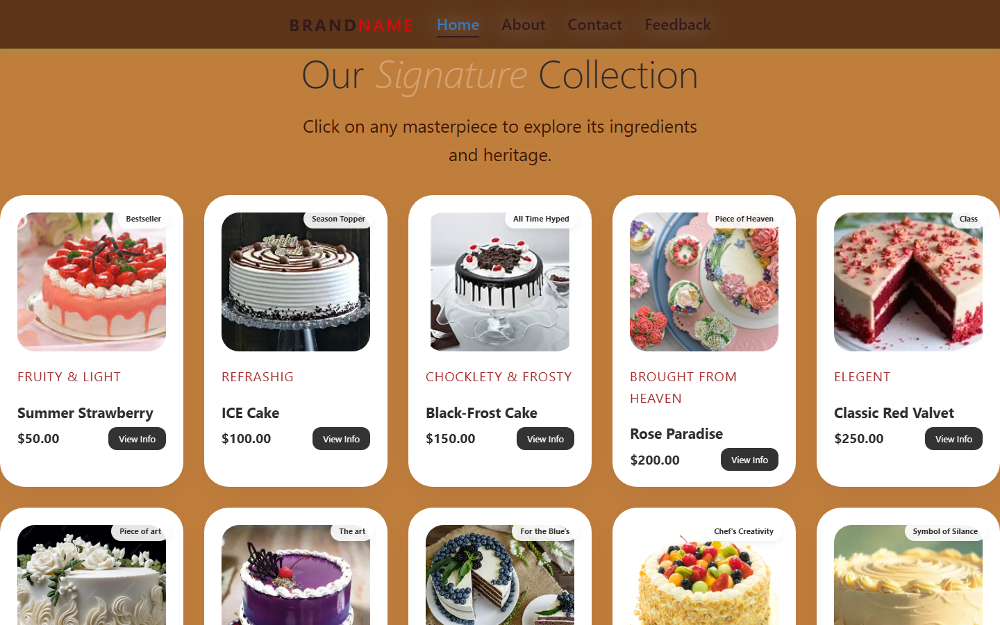

A / Final Microproject
Swapnil's Sweets
A fully-featured multi-page bakery website. Product catalogue, contact page, feedback form, multiple menu sections. Consistent warm design system across all pages.
What I learned: how a shared visual system keeps multiple pages coherent.
View GitHub repository